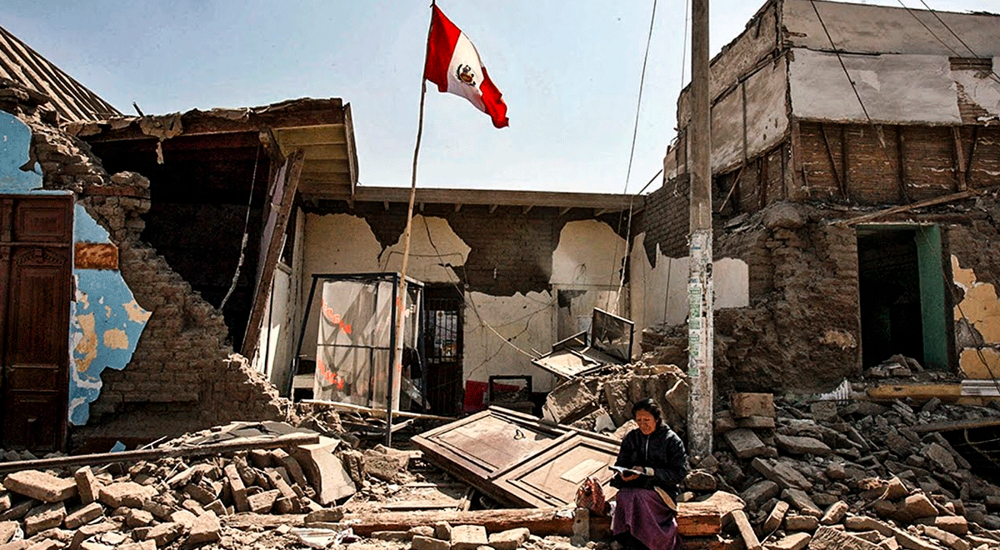
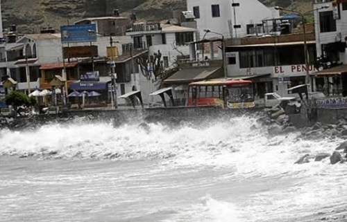
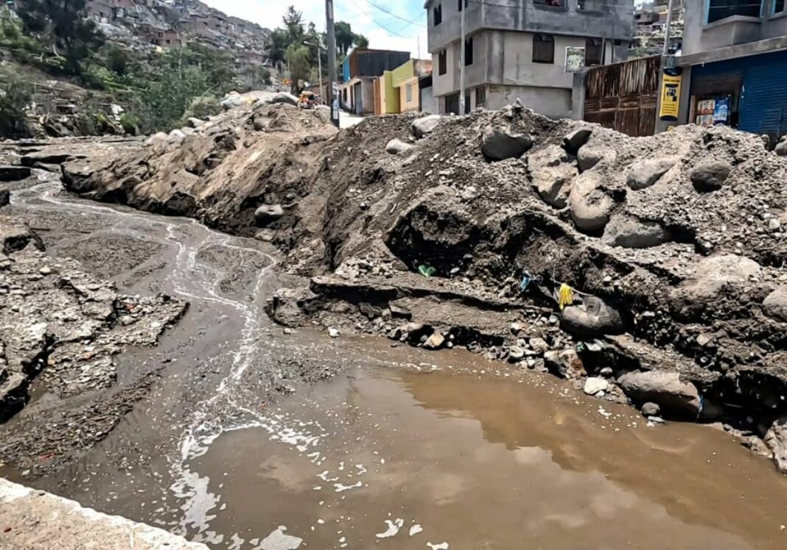
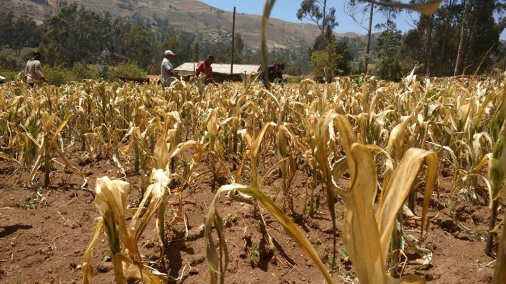

Fenómenos más comunes

🌧️ Inundaciones
Ocurren cuando el agua cubre zonas normalmente secas. Son frecuentes durante lluvias intensas y pueden destruir viviendas, carreteras y cultivos.

🏚️ Sismos
El Perú está ubicado en el Cinturón de Fuego del Pacífico, por eso los terremotos son muy frecuentes.

🌊 Tsunamis
Son olas gigantes generadas principalmente por terremotos submarinos que pueden impactar las costas.

⛰️ Huaycos
Deslizamientos de lodo y piedras causados por lluvias intensas en zonas montañosas.

☀️ Sequías
La falta prolongada de lluvias puede generar escasez de agua y afectar la agricultura.